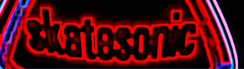
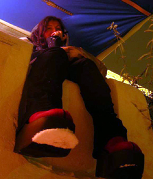
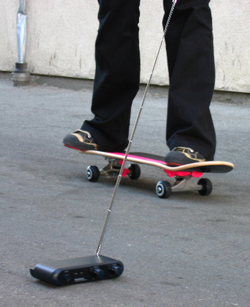
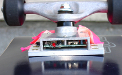
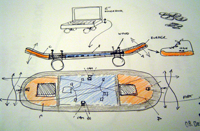
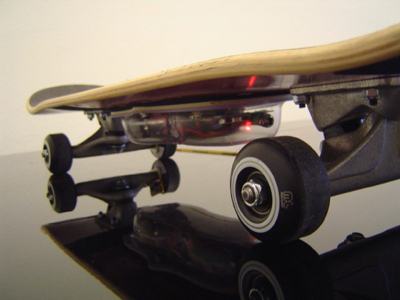

An Interview with Cobi van Tonder by Sylvie Parent  Sylvie interviewed Cobi van Tonder about her IDEO-sponsored residency project, Skatesonic, via email in March 2006.--ed Sylvie Parent: You were selected for the IDEO- ZeroOne San Jose Residency Commission and will create a new project for ISEA2006. Can you tell us a few words about this project?  Cobi van Tonder: First of all I would like to thank ZeroOne, IDEO and the Lucas Arts Program. It has been an absolute pleasure working with IDEO. They have a unique outlook and approach to design and people. Spending much time at the Palo Alto IDEO offices was hugely stimulating and interesting. Skatesonic taps into skateboard culture, using the motions and sounds of skateboards to create music. In a way, each move translates to musical parameters and the rider ends up skating through a landscape of music (which s/he influences over time).
SP: Another project of yours entitled Ephemeral Gumboots is also based on a human/computer-movement/music interactive system. How similar and/or different are these two projects? CvT: They are similar in the sense that they both tap into already existing subcultures, both very physical and rich in cultural metaphor. Both projects have the intention of translating bodily movement into music through the use of technology. Gumboot dance is a potent South African icon. Skateboarding attitude has a raw sense of self and environment which I find very poetic. The difference is that Gumboot dance is already music; it's like tap dance, the focus is rhythm and there is a strong call-and-response musical form imbedded in the group dancing. Skateboarding (like most sport) does have inherent ambient rhythm but this is all much freer, more ambient. So, musically, this project pushes my own boundaries even further. SP: Skateboarding is related to urban space and although it is an individual activity it often involves peers. Teens and young adults organize gatherings and share their experience. What attracted you to this subculture? How is Skatesonic going to be an individual and/or group experience?  CvT: It is wild/fearless/extreme/punkd/crazy. Also, I love the sea, but end up spending so much time in cities. Skateboarding brought the waves into the city, or it turns the city not just upside down, but into waves, and waves are music! Skatesonic will work in both solo and group situation. There are going to be 4 boards, each board mapping to a unique sound and structural parameters, so if there are 4 riders they will be able to jam like a band. SP: Standing on a skateboard and riding it supposes certain ways of moving your body in space. It involves a play with balance, the loss/recovery of stability. Skateboarding can also be a mode of transportation. It implies mobility. Is this specific body language important to the development of the project? CvT: Yes, all of this implies rhythm and mood. Music is an emotional kind of landscape that enables travel. Connecting the gestures of a physical reality with musical form and texture implies superimposing these two realities on top of each other so that they fold back on themselves, thus creating a strange new space. S.P. : What kind of sound or music can we expect from riding/playing the skateboard? CvT: Crazy music. It should be a surprise. SP: As a participant experiments with Skatesonic, s/he will learn how to play it, how to produce sounds and effects. The skateboard is also recording new sounds. Can you tell us a few words about the process? How does the Skatesonic work?  CvT: There are four basic elements: input from sensors on the board, sounds, a musical score and a system to interconnect these elements. Input from the sensors includes acceleration, 3D-spatial positioning, optical input and a microphone inside the skateboard trucks. Sounds include a library of prepared samples and virtual instruments as well as the raw microphone input. The musical score consists of a vocabulary of events corresponding to each possible move, as well as a musical timeline. The core Max/MSP patch is a set of conditions that links up input situations to score and sounds.  All kinds of things will happen. You can, for example, buffer through a sound file in Max, meaning that as the rider rolls over a certain distance it is as if s/he has a record needle under the board, and every inch of movement progresses the sound. The live microphone input also reveals rich information about the texture of surface under the board and intensity of movement. This can be mapped to all kinds of sound parameters and has a very connected, live effect since it is so direct. SP: In this project, as in Ephemeral Gumboots, the body in movement creates sound. In a way, dance precedes and generates music. This is an interesting phenomenon. Of course, as the performance goes, dance/movement and sound/music are intimately connected and affected by one another. CvT: The hen or the egg! SP: Yes, exactly. Another interesting aspect of the work is that it involves the whole body. Can you comment on that? CvT: Yes, the body is the form of us. The abysmal librarian/collector of experience and perception. It is so expressive. I like to look at people - such infinite stories people tell with their bodies. During my residency a local orthopedist showed me some of the technology they use with patients, which I found very interesting. The next step would be to work directly with pulse, EEG, skin response, eye-movement, xray, sonar, etc. It is fascinating and also very real - people dealing with injury or illness. A hospital is also a space that puts my imagination in overdrive. I think there is much potential for theatre in that. Beauty is often found in things that are "wrong," you know? Show me your weakness. Speaking of which, I am @#$&* scared of skateboarding. I didn't do these kinds of things as a kid. Too risky. I was a pianist and violinist. So I am amazed at what these skaters can do - they seem fearless. A kind of freedom. SP: What is your background as a musician and how did your interest in new technologies start? CvT: I come from a classical then jazz and world music then free improvisation then ambient then electronica and now I mix them all. I guess musically I am just like my genes - a mixture of many things. New technology certainly allows for new ways of expression, especially when there is a human inside the box. And I like the complexity and detail that comes with it, even though it's such a crazy animal that wants no master! I mean if you want to suffer, new technology is a sure way of inflecting a lot of suffering onto yourself, but if you can enjoy it, it's good and the rewards plenty. SP: How will Skatesonic be shown during ZeroOne San Jose / ISEA2006? Will it be installed for the general public in a venue? And will it be used in a special performance with experienced skateboarders (or performers/dancers, acrobats!)? CvT: I hope that you will be able to hear Skatesonic from afar. It will be in front of the new City Hall, starting with a performance and flowing into a free improv/play space at designated hours. SP: What is the relationship of Skatesonic with space? How does it relate to its environment?  CvT: Skatesonic "listens" to space through movement, which it maps out and translates into music. I like to think of the skateboard as a creature that I call the LicKr. Imagining what the world sounds and feels like living and moving at great speed that close to the ground. The LicKr is a brainless body, or actually a flattened skull, with long tongue on wheels that licks the asphalt, tasting every bit of it. It's a sensor creature dependant on its riders; mostly a moody and easily aggravated creature and super hero of hers own transmission fiction, spitting out syllables of noise, texture, beats and spatial patterns. Physically, the skateboard is absorbed into the body (similar to the way a music instrument becomes part of a musician), and allows a skateboarder to use the architecture of a city. This is such a creative way of dealing with the city! Every nook and cranny becomes a surface that is encountered in a direct way. This reminds me of human touch on a music instrument (and the touch of the instrument on the musician). Sound reveals space, be it physical, social or imaginary. Of course the real sounds (unamplified) of skateboard riding are also directly connected to the environment in which they are created. One could say it is a layer of the environment. Skatesonic partly records data and sounds, allowing for repetition, difference, layering, erasure, memory. A pre-composed musical architecture or form to allow boundaries within which to control the musical outcome is created. SP: One last question : how do you feel your work responds to the idea of Transvergence, being one of the themes of the festival? CvT: Skatesonic is a hyper-territorialization of skateboard-culture. A music interface design project. Creature Klangmasjien
Synesthetic Existenz
Moving skate-portrait The architectural metaphor also talks about information space. The action of the skateboarder functioning as metaphorical concrete bender. Riding waves of chaotic timing, implying temporary control of what is temporal. A ruthless attempt to surf the edge of order. Identity is not about place as much as about being. SP: Thanks Cobi. URLs: Skatesonic
http://www.otoplasma.com/skatesonic/
http://www.eyebeam.org/reblog/archives/2006/04/skateboard_music_interface.html
http://www.turbulence.org/blog/archives/002350.html
http://www.we-make-money-not-art.com/archives/008375.php |